Vua robot (final boss đảo Kim) — lượt 3: bớt chi tiết thân, quyền trượng hệ mặt trời (Mặt Trời gắn trượng; Trái Đất, Sao Hỏa, Sao Thủy lơ lửng)
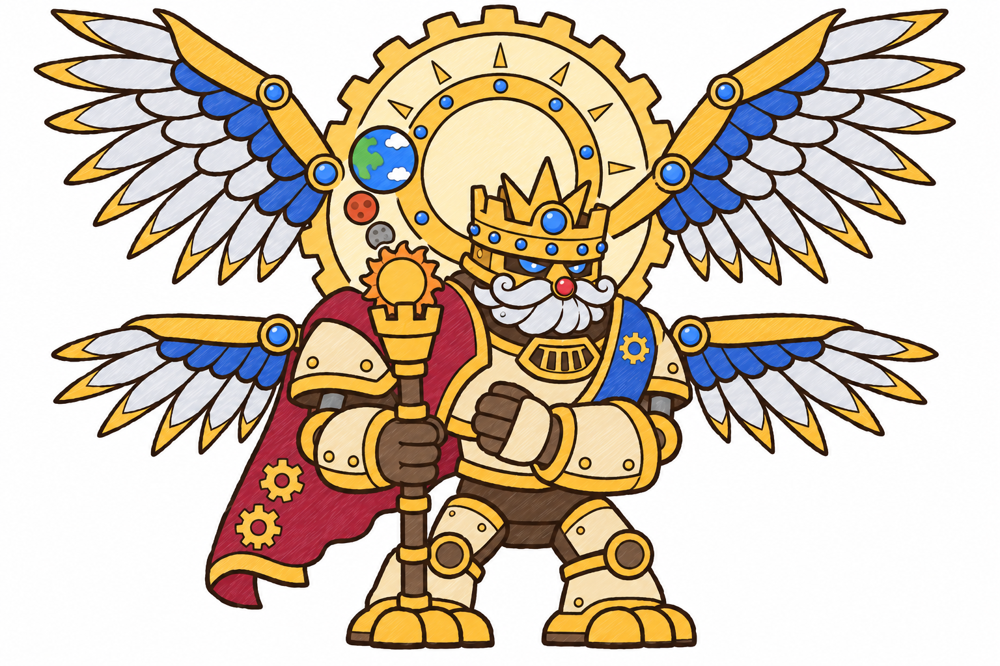
A3 vàng + men trắng, cánh máy xanh trắng, vòng mặt trời (chưa thấy ảnh: đang gen, tải lại trang sau vài phút)
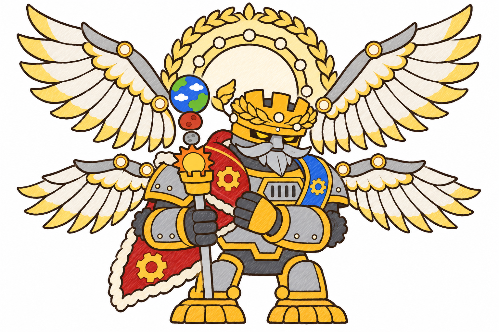
B3 vàng + bạc, cánh lông trắng, vòng nguyệt quế
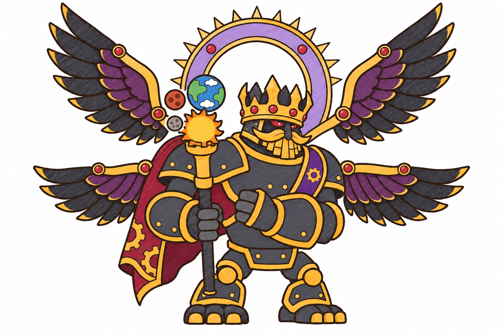
C3 thép đen + vàng, cánh lông đen tím, vòng răng nhọn
Lượt 2: cánh hoàng gia nhiều tầng + vòng hoa văn sau lưng (thân giữ nguyên lượt 1)
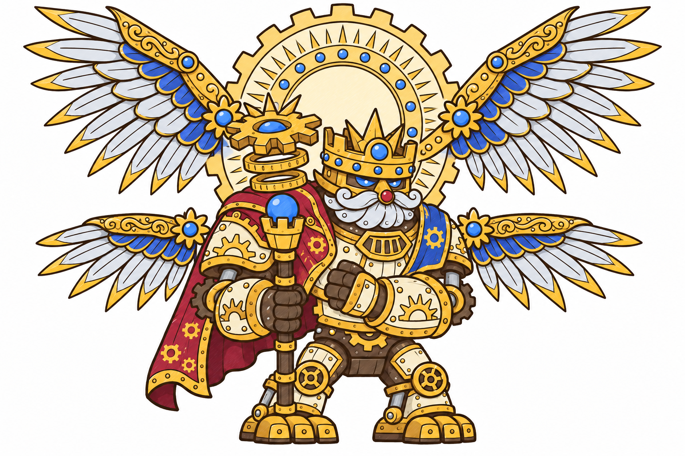
A2 cánh máy ba tầng: lông phủ men xanh hoàng gia, tầng giữa + lông dài thép trắng viền vàng ngọn vàng; tay cánh vàng chạm hoa văn, hoa ngọc lam ở cổ cánh; vòng mặt trời vàng nhạt răng bánh răng, vành ngọc lam
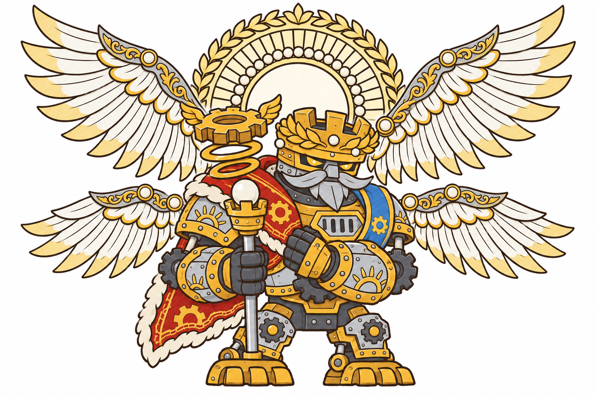
B2 cánh lông vũ trắng ba tầng ngọn vàng; tay cánh bạc chạm vàng, ngọc trai; vòng hào quang nguyệt quế, tia sáng thẳng, vành ngọc trai
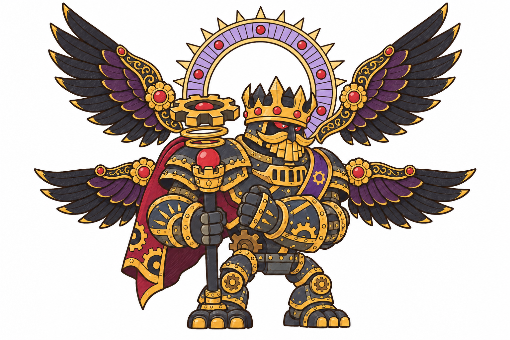
C2 cánh lông đen ba tầng (lông phủ tím mận viền vàng, ngọn vàng); tay cánh đen vàng ngọc đỏ; vòng răng nhọn vàng nhạt + tím, ngọc đỏ (nếu chưa thấy ảnh: đang gen, tải lại trang sau ~2 phút)
Lượt 1
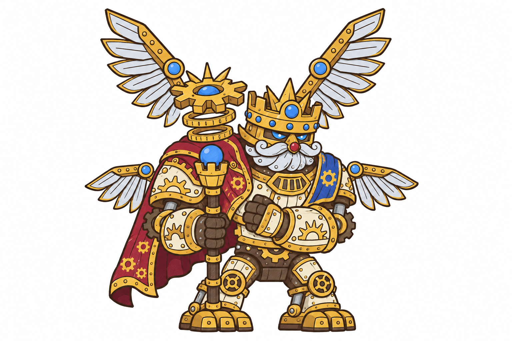
A (Claude đề xuất) vàng hoàng kim + men trắng ngà, 4 cánh MÁY: tay cánh vàng tán đinh, lông thép trắng viền vàng, lõi ngọc lam; vương miện tia mặt trời đính ngọc lam, mắt lam xếch, râu kim loại trắng xoăn, mũi hồng ngọc; áo choàng đỏ thẫm thêu bánh răng; đầu trượng bánh răng mặt trời; chân giáp vàng – trắng, gối bánh răng, pít-tông, bàn chân ba ngón
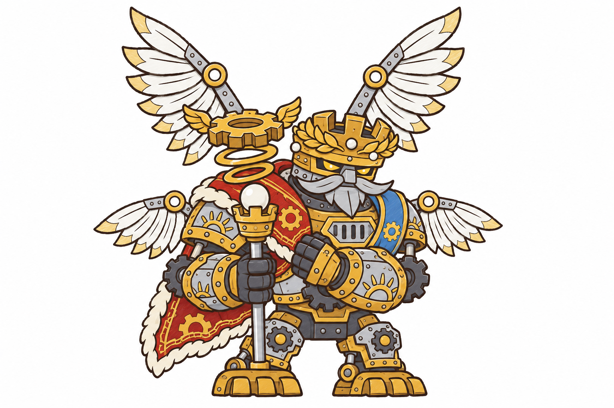
B vàng + bạc, 4 cánh LÔNG VŨ TRẮNG thiên thần (ngọn vàng nhạt, gốc vòng vàng); vương miện nguyệt quế, mắt vàng, râu bạc dài chẻ đôi; áo choàng đỏ son viền lông trắng; đầu trượng bánh răng có hai cánh nhỏ, ngọc trai
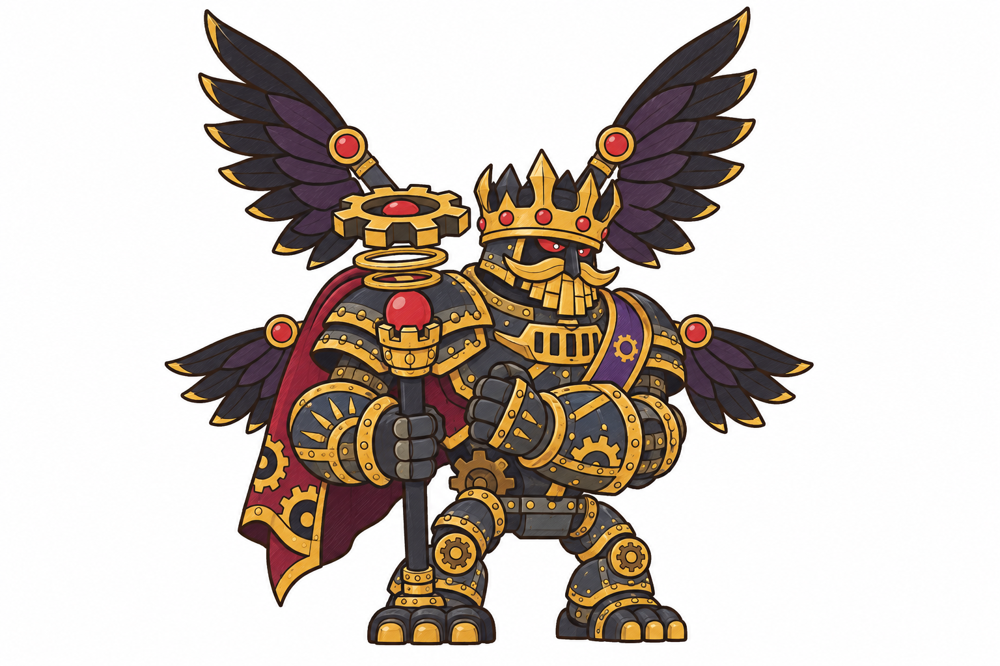
C (bản tối) thép đen + vàng, 4 cánh LÔNG VŨ ĐEN ánh tím than, ngọn vàng, ngọc đỏ ở gốc; vương miện răng nhọn ngọc đỏ, mắt đỏ, râu vàng vuông nhiều tầng; áo choàng đỏ rượu, dải tím; đầu trượng bánh răng ngọc đỏ
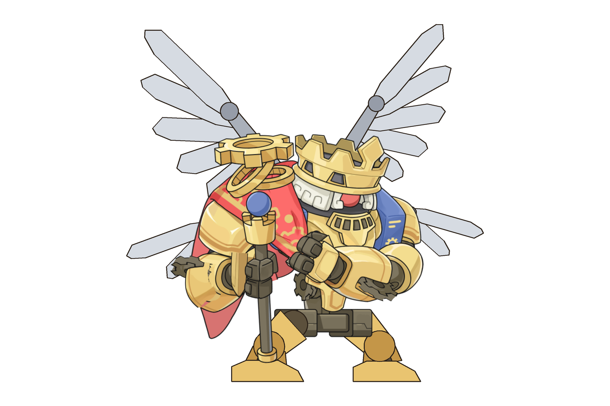
Sơ đồ bố cục (ảnh mẫu 1 gửi GPT): thân con gốc nâng lên, chân khối giữ chỗ, 4 cánh xám giữ chỗ — đúng chỗ sẽ lắp xương
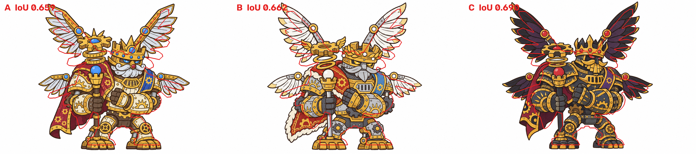
So với sơ đồ (viền đỏ): GPT vẽ to hơn ~14 % và thẳng mặt hơn; co về cùng cỡ thì phần thân + chân khớp 0,80 (A), 0,80 (B), 0,82 (C)
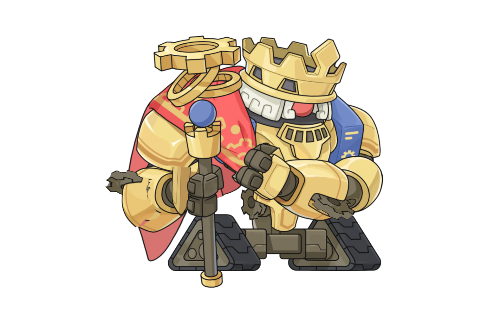
Con gốc monster_3637 (khung 0 idle): chỉ để so, không đăng công khai